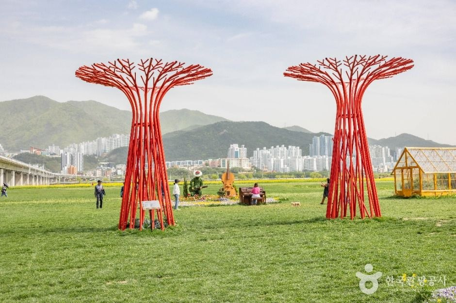
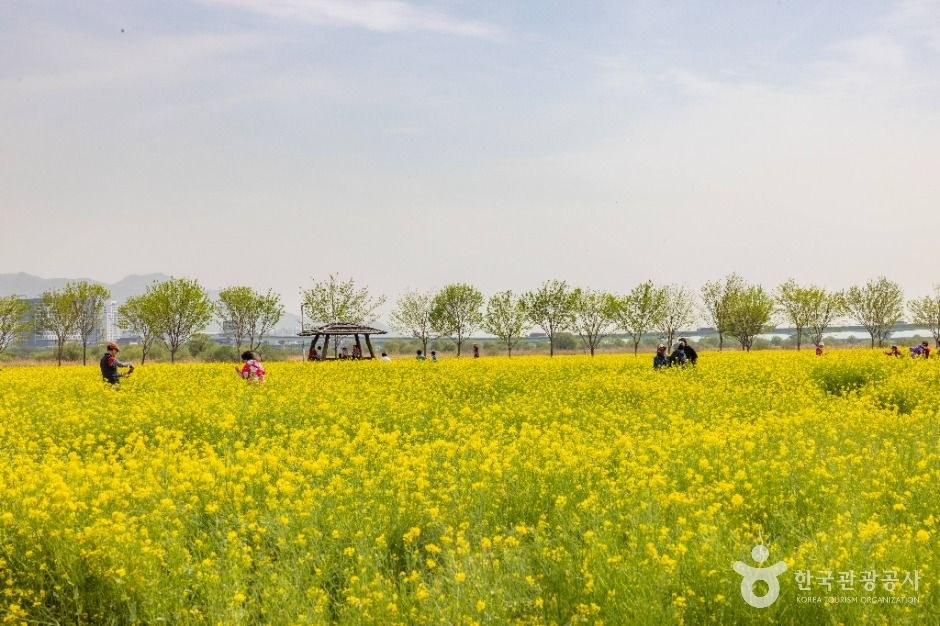
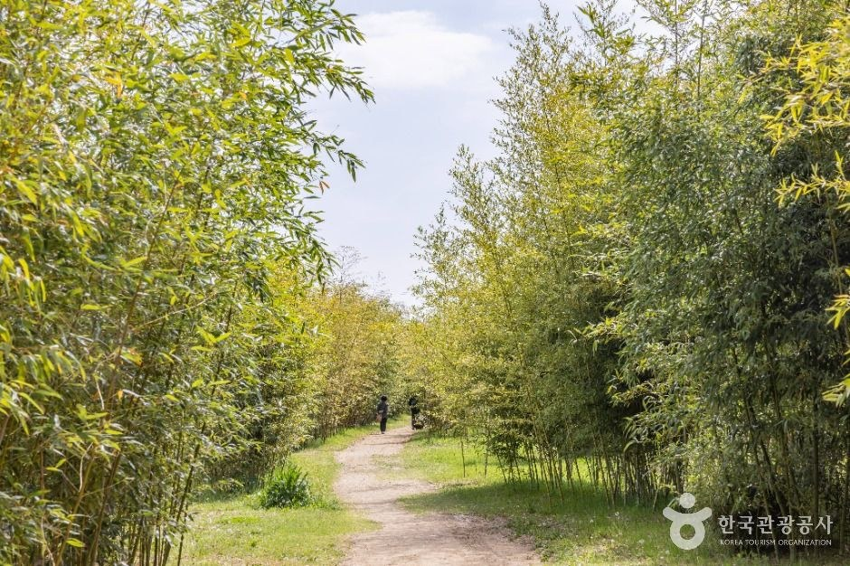
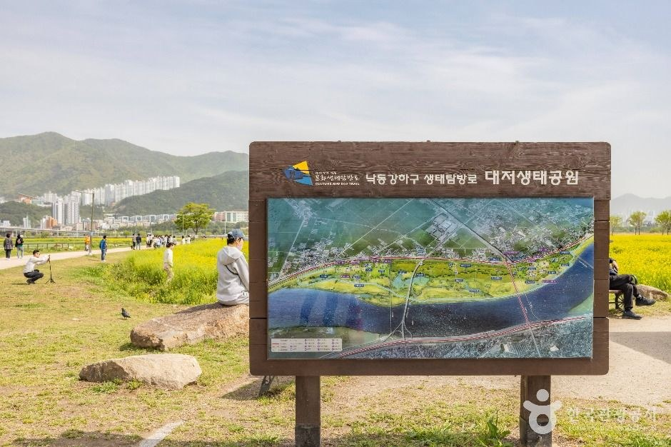

Busan Daejeo Campground Guide: Overview
This Busan Daejeo Campground guide covers Daejeo Campground (대저캠핑장), a large riverside campsite inside Daejeo Ecological Park in Gangseo-gu, Busan. It sits on the green floodplain of the Nakdong River, between the Daejeo floodgate and the Gimhae International Airport ramp, so it is one of the few places in Korea where you can pitch a tent within minutes of an international airport.
Most foreign visitors know Busan for Haeundae and Gwangalli beaches. Daejeo is the other Busan: wide wetlands, reed beds, bamboo paths and huge open lawns where Busan families come to camp, cycle and play ball games.

The Campground: Sites, Power and Facilities
KTO describes about 100 sites in two zones. The auto-camping zone lets you park next to your pitch, while the general camping zone is car-free and you carry your gear in. Both zones have electricity at the sites.
Each zone has its own toilets and shower block, and KTO notes they are well kept, with reliable hot water. The dishwashing sinks also run hot water late into the night — a real plus on a cold November evening.
- Sports: a baseball field, jokgu (Korean foot-volleyball) courts and plenty of open grass for badminton.
- Bike rental: available at the campground, but bikes must stay inside the ecological park.
- Check-in / check-out: 14:00 / 12:00.


Daejeo Ecological Park and the Nakdong Estuary
The park runs along the right bank of the Nakdong River. From below Gupo Bridge it is part of the Nakdong River Estuary migratory bird sanctuary, a designated Natural Monument. Sindeok Wetland and smaller wetlands, waterways and natural grassland fill most of the park, with sports fields and facilities at each end.
In April, a 370,000 m² canola field turns the park bright yellow for the Daejeo Canola Flower Festival. In late autumn and winter, the estuary becomes a stopover for migratory birds, so mid-November is a good time to bring binoculars. Year-round, look for the red tree-like sculptures, garden huts, a bamboo forest path and long tree-lined cycle lanes.


Visitor Information
| Item | Details |
|---|---|
| Name | Daejeo Campground (대저캠핑장), inside Daejeo Ecological Park (대저생태공원) |
| Address | 184 Cheyukgongwon-ro 6beon-gil, Gangseo-gu, Busan |
| Sites | About 100; auto-camping zone and car-free general zone; electricity available |
| Check-in / out | 14:00 / 12:00 |
| Closed | Open all year |
| Parking | 1 car per booked site free; extra cars 2,400 KRW per day |
| Booking | daejeocamping.com (monthly lottery, then real-time booking for leftover sites) |
| Ecological park | Always open; free admission (park info 051-971-6011) |
| Campground office | 051-941-0957 |
Sources: Korea Tourism Organization (한국관광공사) listings for Daejeo Campground and Daejeo Ecological Park, and the official campground website. Photos © Korea Tourism Organization (KOGL Type 1 and Type 3, attribution). No AI-generated images. Fees and booking rules can change — confirm before you go.
Getting There
The campground is in Daejeo 1-dong, Gangseo-gu, west of central Busan and close to Gimhae International Airport. The nearest urban rail is Busan Metro Line 3 towards Daejeo; from the stations near Gangseo Sports Park it is a walk across the levee or a short taxi ride. Paste 대저캠핑장 into Naver Map or Kakao Map for exact routes — they are far more reliable in Korea than Google Maps. Most campers drive, since the auto-camping zone lets you unload next to your site.
Tips for Your Stay
- Book early: weekends and April canola season fill fast; watch for the monthly lottery on the official site.
- Pack for wind: the open floodplain gets breezy and chilly at night from November — bring warm layers and solid tent pegs.
- Expect aircraft: planes approach nearby Gimhae Airport, which many plane-spotting campers enjoy; light sleepers may want earplugs.
- Respect the wetlands: it is a bird sanctuary, so keep to paths and take all rubbish home.
- Cycle the park: rent a bike at the campground and ride the tree-lined lanes and bamboo path.
How It Compares with Other Busan Outdoor Stops
| Daejeo Campground (Gangseo) | Gwangalli Beach (Suyeong) | Namparang Trail Busan section | |
|---|---|---|---|
| Type | Riverside campsite in an ecological park | City beach and night views | Coastal walking trail |
| Stay overnight | Yes (camping) | Hotels | No |
| Best season | April canola; autumn birds | Summer and drone-show nights | Spring and autumn |
| Best for | Families, campers, cyclists | Nightlife and views | Hikers |
Who It Suits
- Great for: Expats and travellers with camping gear or a rented car who want a nature night in Busan.
- Great for: Families who want lawns, sports fields and bikes in one place.
- Great for: Birdwatchers and plane-spotters near Gimhae Airport.
- Less ideal: First-time visitors without gear or Korean booking help — consider a glamping site or a hotel instead.
Plan Your Busan Trip
Busan Daejeo Campground FAQ
Where is Daejeo Campground?
At 184 Cheyukgongwon-ro 6beon-gil, Gangseo-gu, Busan, inside Daejeo Ecological Park on the Nakdong River floodplain. Search 대저캠핑장 in Naver Map or Kakao Map for directions.
What kinds of sites are there?
According to Korea Tourism Organization (KTO), about 100 sites split into an auto-camping zone (cars can drive in) and a general camping zone (no cars). Electricity is available at the sites.
What are the check-in and check-out times?
KTO lists check-in at 14:00 and check-out at 12:00. The campground is open all year (no regular closing day).
How do I book?
Through the official website, daejeocamping.com. Notices on the site say reservations are allocated by a monthly lottery for the following month, with leftover sites then opened for real-time booking. The site is in Korean, so use a browser translator or ask a Korean friend to help.
Is there parking?
KTO says one car per booked site parks free for the stay; each extra car costs 2,400 KRW per day. The campground office number is 051-941-0957.